本文最后更新于 2024-05-14T10:11:47+00:00
YSOS-lab2
1. 实验要求
了解中断的作用、中断的分类、中断的处理过程。
启用基于 APIC 的中断，注册 IDT 中断处理程序，实现时钟中断。
注册内核堆分配器。（不实现内存分配算法，使用现有代码赋予内核堆分配能力）
实现串口驱动的输入能力，尝试进行基础的 IO 操作和交互。
2. 实验过程
补全 TSS 的中断栈表
参照tss.privilege_stack_table[0]完成即可
代码实现见关键代码部分, [点击跳转](# 实现tss.interrupt_stack_table)
注册中断处理程序
代码实现见关键代码部分, [点击跳转](# 实现注册中断处理程序)
初始化APIC
代码实现见关键代码部分, [点击跳转](# 实现初始化APIC)
时钟中断
代码实现见关键代码部分, [点击跳转](# 实现时钟中断)
为了保证多线程环境下的安全性, 保证COUNTER原子地读写, 代码中采用了AtomicU64实现变量COUNTER
调节时钟中断频率
内核运行结果如下
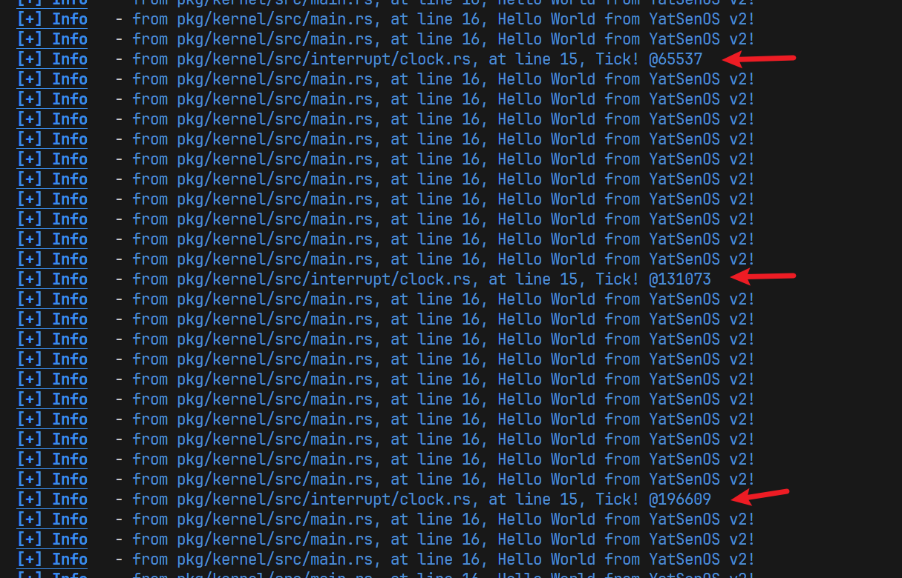
可以看出, 每打印10次 Hello world 出现一次时钟中断
要实现中断频率减半,只需修改pkg/kernel/src/interrupt/clock.rs
1 2 3 4 5 6 7 8 pub extern "x86-interrupt" fn clock_handler (_sf: InterruptStackFrame) {without_interrupts (|| {if inc_counter () % 0x10000 == 0 {"Tick! @{}" , read_counter ());ack ();
第三行修改为if inc_counter() % 0x20000 == 0 {
重新编译和运行内核,如下图
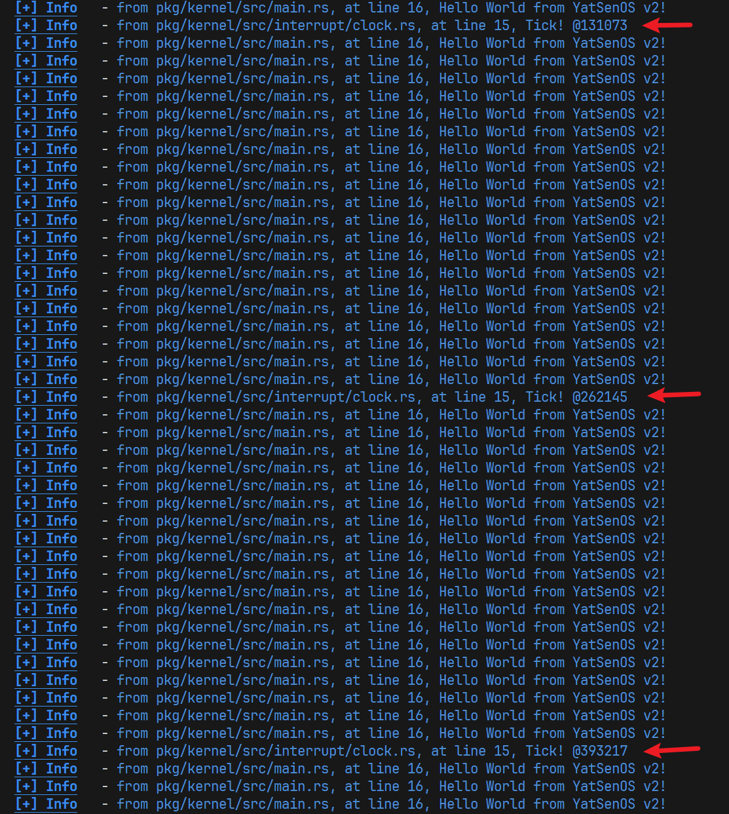
可以看出, 每打印20次 Hello world 出现一次时钟中断, 中断频率减半了
串口输入中断
代码实现见关键代码部分, [点击跳转](# 实现串口输入中断)
实现输入驱动input.rs:
使用 crossbeam_queue::ArrayQueue 作为缓冲区的实现, 它是一个无锁的、固定大小的队列, 可以在多线程环境下安全地进行读写操作。
设置输入缓冲区INPUT_BUF的大小为128, 存储数据结构为pc_keyboard::DecodedKey, 这是一种可以容纳Unicode的数据结构, 保证串口输入对中文和emoji的支持
实现中断处理程序serial.rs:
当输入中断发生的时候, 会调用receive函数, 函数大致逻辑如下
首先创建一个Unicode缓冲区,用于处理UTF-8编码字符大小不定的情况, 缓冲区大小4字节
进入一个循环,每次使用get_serial_for_sure().receive()从串口输入获取一个字节的数据, 写入Unicode缓冲区, 使用from_utf8函数判断Unicode缓冲区中的数据是否构成合法字符, 如果是合法字符则放入输入缓冲区,结束循环
用户交互
代码实现见关键代码部分, [点击跳转](# 实现用户交互)
思考题
1.为什么需要在 clock_handler 中使用 without_interrupts 函数？如果不使用它, 可能会发生什么情况？
为了避免clock_handler在执行的过程中被其他中断打断, 如果不使用它, 可能出现的后果如下
中断嵌套：如果在时钟中断处理函数中不关中断, 而又在该函数中触发了同一类型的中断（例如, 又发生了一个时钟中断）, 这会导致中断嵌套, 影响系统的响应性能
时钟精度下降: 如果时钟中断被另一个耗时很长的中断打断, 会导致时钟不准
2.考虑时钟中断进行进程调度的场景, 时钟中断的频率应该如何设置？太快或太慢的频率会带来什么问题？请分别回答。
太快或太慢的频率会带来的问题如下
在大多数情况下，100Hz的频率是一个不错的时钟中断频率, 既保证中断开销不至于过大, 保证系统的吞吐率, 又能保证用户能够感受到多个进程同时执行, 降低响应时延
3.在进行 receive 操作的时候, 为什么无法进行日志输出？如果强行输出日志, 会发生什么情况？谈谈你对串口、互斥锁的认识。
准确来说, 并非整个receive函数无法进行日志输出, 请参考下面的代码
1 2 3 4 5 6 7 8 9 10 11 12 fn receive () {"at receive start" );let mut input_buffer :Vec <u8 > = Vec ::with_capacity (INPUT_BUFFER_SIZE);loop {let mut serial = get_serial_for_sure ();"at receive middle" );let rec = serial.receive ();drop (serial);"at receive end" );
at receive start和at receive end是可以正常输出的, at receive middle无法输出
函数get_serial_for_sure()会使用互斥锁保护串口, drop(serial)会解除对互斥锁的保护
串口设备属于静态的全局对象, 可能会被多个进程同时读写, 造成未定义的行为, 所以需要使用互斥锁保护
在互斥锁保护期间, 日志输出无法取得互斥锁的所有权, 就无法正常输出
4.输入缓冲区在什么情况下会满？如果缓冲区满了, 用户输入的数据会发生什么情况？
我的实现使用了三个缓冲区, 分别是:
Unicode输入缓冲区 : 大小为4个字节, 用于将输入的字节流转为UTF-8字符保存到全局缓冲区 . 只要输入的字符是UTF-8编码的, 该缓冲区就不会满, 否则, 遇到缓冲区满的情况, 缓冲区中的数据会视为非法数据而被丢弃
全局缓冲区: 用ArrayQueue实现的大小限定为128的缓冲区, 用于存储用户输入但还没有被处理程序读取的Unicode字符. 如果用户一直输入而没有处理程序(本次实验是main函数运行的get_line())读取, 该缓冲区可能会满. 如果该缓冲区满了, 会触发警告输出, 新输入的字符会被舍弃
在本次实验中该缓冲区不可能满, 因为kernel启动后就始终在调用get_line()函数读取全局缓冲区 . 如果修改代码, kernel启动后可能会执行其他耗时更长的任务而有一段时间没有调用get_line(), 则全局缓冲区可能会满, 结果是会触发警告输出, 用户新输入的字符会被舍弃
处理程序缓冲区 : 在本次实验是get_line()函数, 它会循环等待并读取全局缓冲区 , 直到读取到换行字符结束循环. 它使用一个预留了128字符空间的String实现. 因为String具有自动扩容的功能, 该缓冲区不可能满.
5.进行下列尝试, 并在报告中保留对应的触发方式及相关代码片段：
尝试用你的方式触发 Triple Fault，开启 intdbg 对应的选项，在 QEMU 中查看调试信息，分析 Triple Fault 的发生过程。
在kernel_main函数中添加以下代码, 用于触发page_fault
1 2 3 4 5 unsafe {let a :*mut u8 = 0x1000000000 as *mut u8 ;let b :u8 = *a + 1 ;println! ("{b}" );
在pkg/kernel/src/interrupt/exceptions.rs注释掉page_fault和double_fault的中断处理函数, 然后启动内核
可以观察到, 内核一直在重启, 说明成功触发了Triple Fault
运行下面的指令启动QEMU并开启了interrupt debug, 可以看到中断记录如图
1 /usr/bin/qemu-system-x86_64 -bios assets/OVMF.fd -net none -serial stdio -m 96M -d int -drive format=raw,file=fat:rw:esp
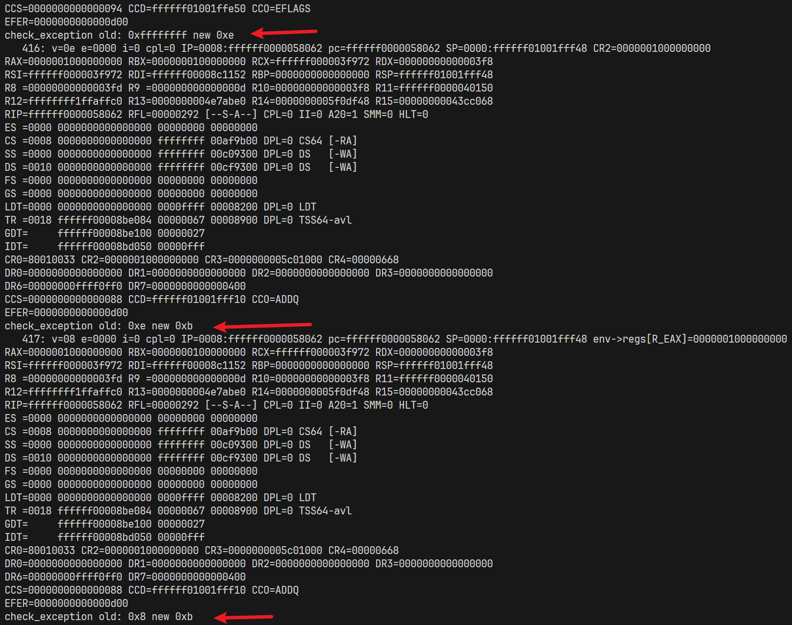
查询https://wiki.osdev.org/Exceptions 可知:
0xe对应Page Fault, 0xb对应Stack-Segment Fault, 0x8对应Double Fault
Triple Fault的发生过程为在触发general_protection_fault之后, CPU尝试在 IDT 中查找相应的处理函数, 由于找不到, 接着抛出了 double fault 异常, 找不到相应的处理函数, 就抛出了Triple Fault异常
尝试触发 Double Fault，观察 Double Fault 的发生过程，尝试通过调试器定位 Double Fault 发生时使用的栈是否符合预期。
触发方式同上, 不同点是保留double_fault的中断处理函数
要查看double fault发生时的栈，首先确定栈的地址，可以从如图的输出中得到
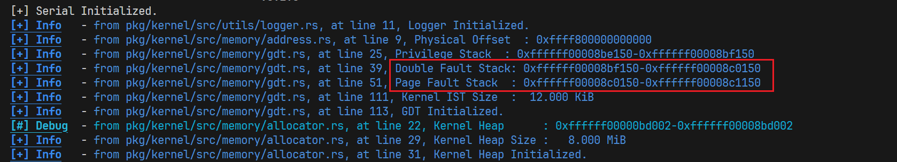
使用gdb调试器，查看指定内存地址，就能看到栈的数据
1 2 3 4 5
结果如下图,可以看到double fault的栈里是有数据的, 说明此时触发了double fault, 而Page fault 的栈里没有数据, 因为Page Fault的处理函数被注释了
double fault的栈
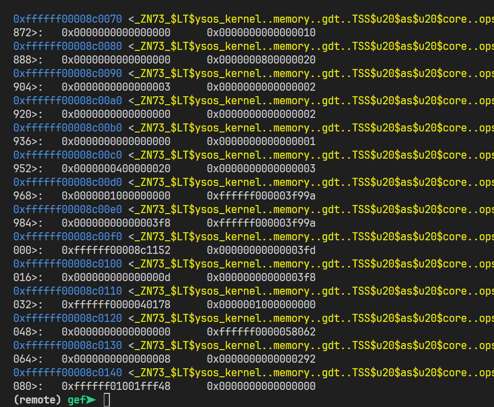
Page Fault的栈
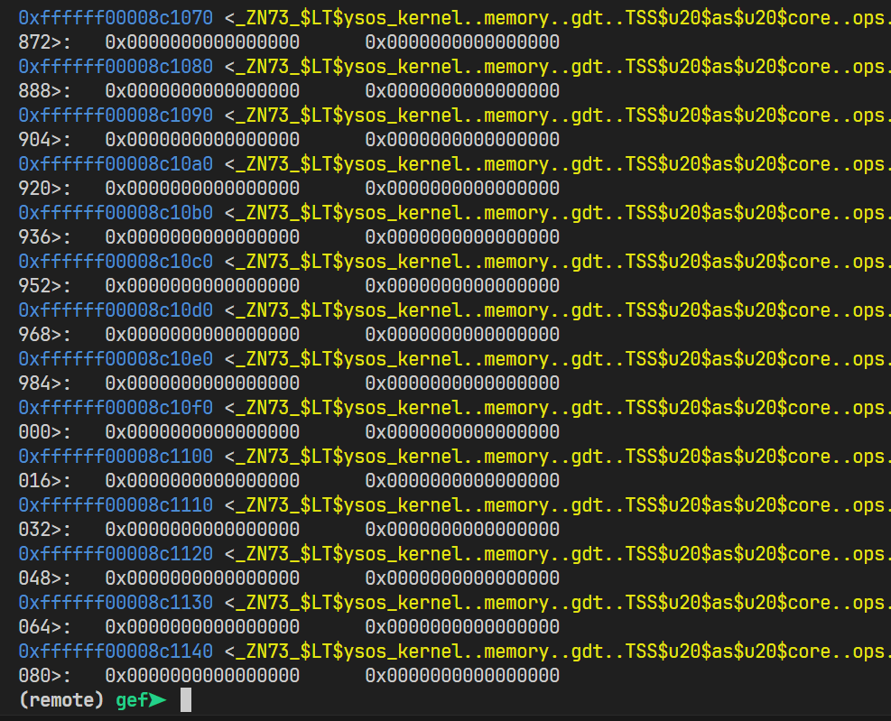
通过访问非法地址触发 Page Fault，观察 Page Fault 的发生过程。分析 Cr2 寄存器的值，并尝试回答为什么 Page Fault 属于可恢复的异常 。
在kernel_main加入以下代码以引入缺页异常
1 2 3 4 5 unsafe {let a :*mut u8 = 0x1000000000 as *mut u8 ;let b :u8 = *a + 1 ;println! ("{b}" );
调试过程如下图:
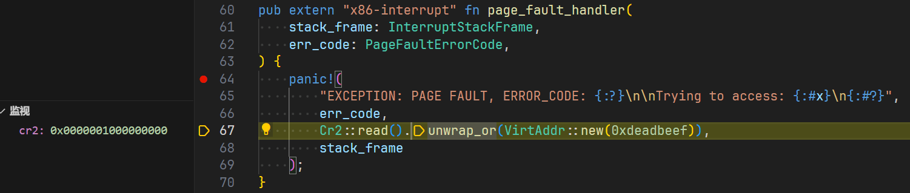
可以看出, Cr2寄存器的值0x0000001000000000就是上面尝试访问的地址
缺页异常经过异常处理函数处理之后, 可以将不在内存中的虚拟地址数据重新加载到内存中, 这样就可以正常访问了, 所以 Page Fault 属于可恢复的异常 。
使用QEMU可以看到中断记录如图
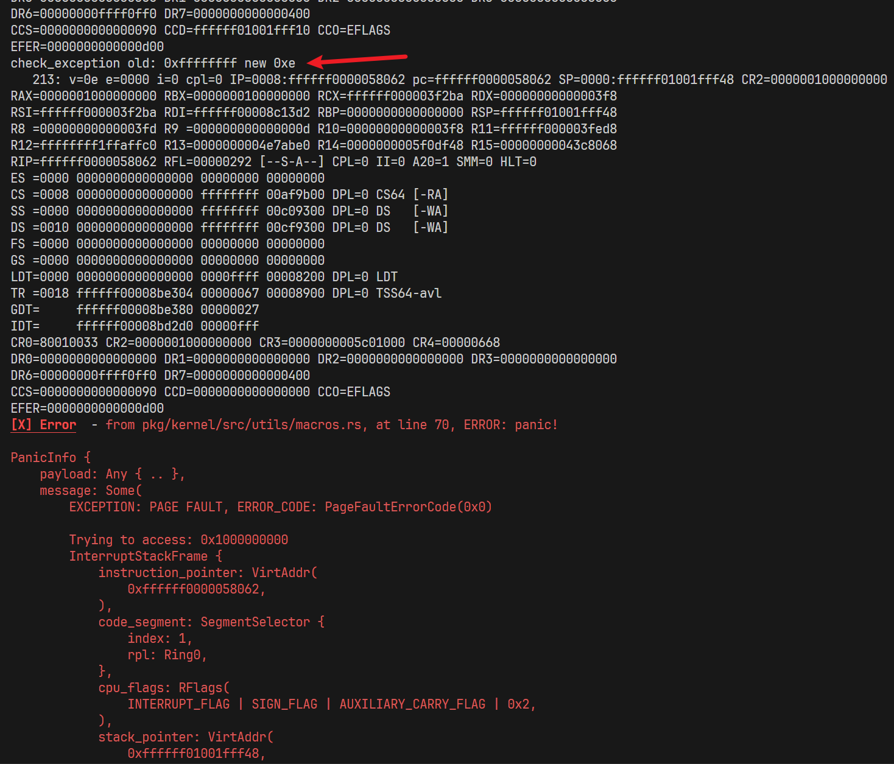
check_exception old: 0xffffffff new 0xe表明当前出发了缺页中断, 0xe恰好就是缺页的中断向量号
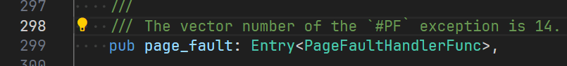
6.如果在 TSS 中为中断分配的栈空间不足, 会发生什么情况？请分析 CPU 异常的发生过程, 并尝试回答什么时候会发生 Triple Fault。
==方法1==
如果在 TSS 中为中断分配的栈空间不足，会发生Triple Fault
在main函数添加如下代码，用以触发page_fault
1 2 3 4 5 6 unsafe {let a :*mut u8 = 0x1000000000 as *mut u8 ;let b :u8 = *a + 1 ;println! ("{b}" );
在pkg/kernel/src/interrupt/exceptions.rs修改page_fault_handler
1 2 3 4 5 6 7 debug!("at page_fault_handler, stack_frame={:#?}, err_code={:#?}" , stack_frame, err_code);unsafe {let a :*mut u8 = 0x2000000000 as *mut u8 ;let b :u8 = *a + 1 ;println! ("{b}" );
启动操作系统, 可以看到一直在循环打印at page_fault_handler, 没有发生Triple Fault
中断栈的分配情况如下
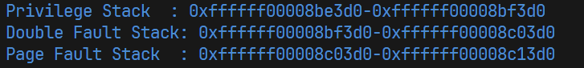
page_fault_handler中打印的日志如下
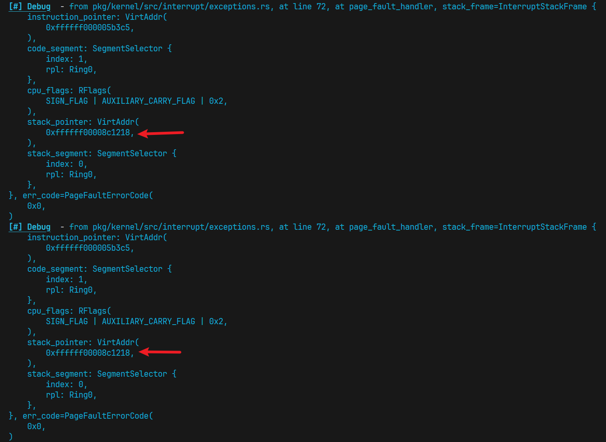
栈指针一直指向0xffffff00008c1218, 在Page Fault Stack的栈顶附近
因为page_fault_handler中一直在访问同一个地址0x2000000000, 栈指针没有变化, 所以中断栈没有被填满
现在修改pkg/kernel/src/memory/gdt.rs, 修改给中断分配的栈大小如下
1 2 pub const IST_SIZES: [usize ; 3 ] = [0x1 , 0x1 , 0x1 ];
重新编译和启动操作系统, 可以看到Triple Fault发生了, 如下图
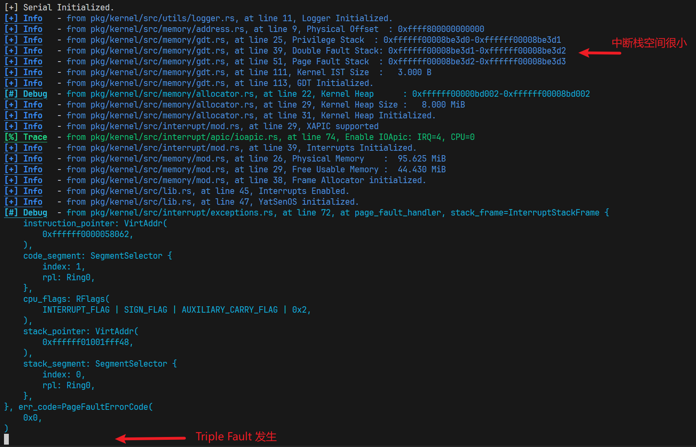
==方法2==
该方法可以更加直观地看到中断栈被写满的过程
在main函数添加如下代码，用以触发page_fault
1 2 3 4 5 6 unsafe {let a :*mut u8 = 0x1000000000 as *mut u8 ;let b :u8 = *a + 1 ;println! ("{b}" );
在pkg/kernel/src/interrupt/exceptions.rs修改page_fault_handler
1 2 3 4 5 6 7 debug!("at page_fault_handler, stack_frame={:#?}, err_code={:#?}" , stack_frame, err_code);unsafe {"mov eax, 1" );"mov ebx, 0" );"div ebx" );
修改divide_error_handler
1 2 3 4 5 6 7 debug!("at divide_error_handler, stack_pointer={:#?}" , stack_frame.stack_pointer);unsafe {"mov eax, 1" );"mov ebx, 0" );"div ebx" );
启动操作系统, 大约几秒后发生了Triple Fault
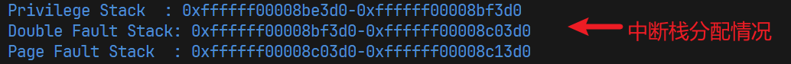
输出的开头:
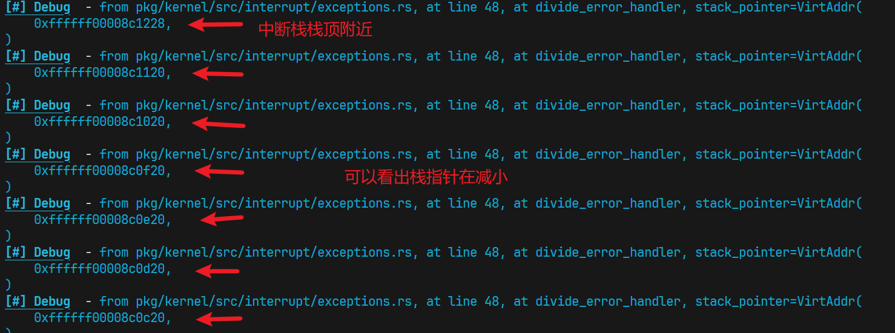
中间输出的内容很长,这里不展示了
输出的结尾:
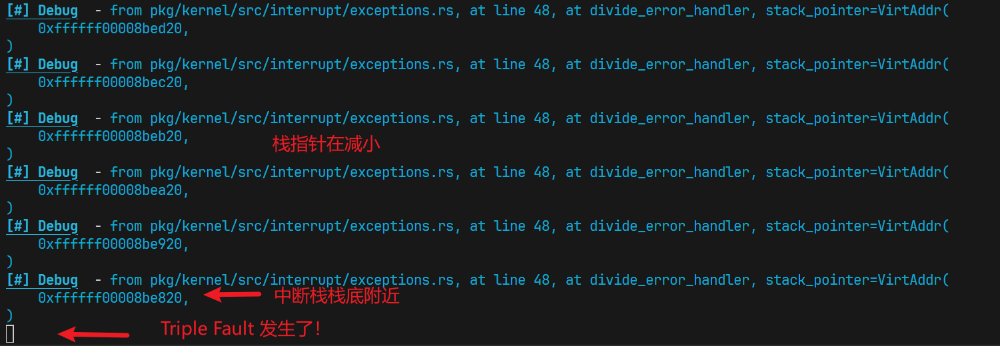
现在修改pkg/kernel/src/memory/gdt.rs, 修改给中断分配的栈大小如下
1 2 pub const IST_SIZES: [usize ; 3 ] = [0x500 , 0x500 , 0x500 ];
重新编译和启动操作系统, 结果如下
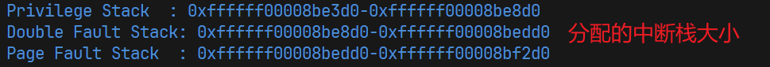
Triple Fault前的输出明显变短了, 因为给中断分配的栈空间更小了
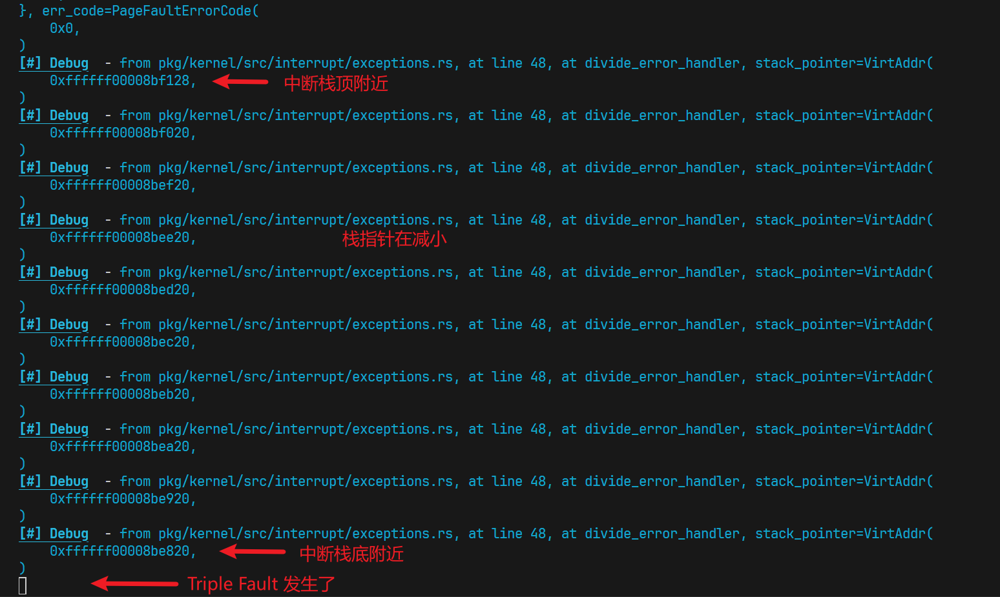
==结论==
当处理器因为中断栈空间不足等原因无法调用中断处理程序时, 就会发生Triple Fault
7.在未使用 set_stack_index 函数时, 中断处理程序的栈可能哪里？尝试结合 gdb 调试器, 找到中断处理程序的栈, 并验证你的猜想是否正确。
在未使用 set_stack_index 函数时, 中断处理程序使用内核栈
在上一问方法2的基础上 继续修改
修改pkg/kernel/src/interrupt/exceptions.rs的register_idt, 注释掉.set_stack_index
1 2 3 4 5 6 idt.double_faultset_handler_fn (double_fault_handler);set_handler_fn (page_fault_handler);
重新编译和启动操作系统
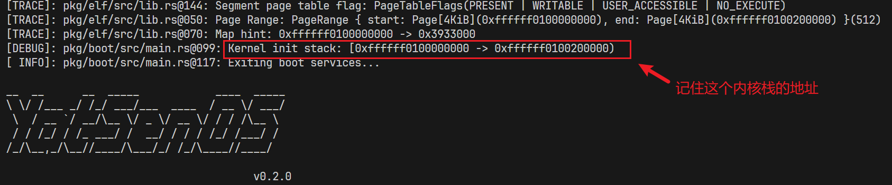
输出很长,这里展示开头和结尾
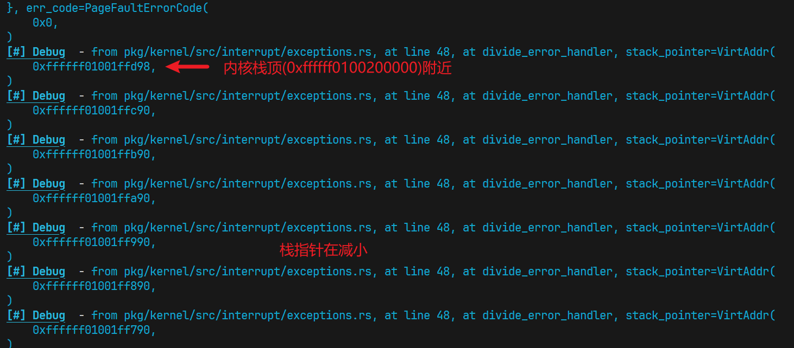
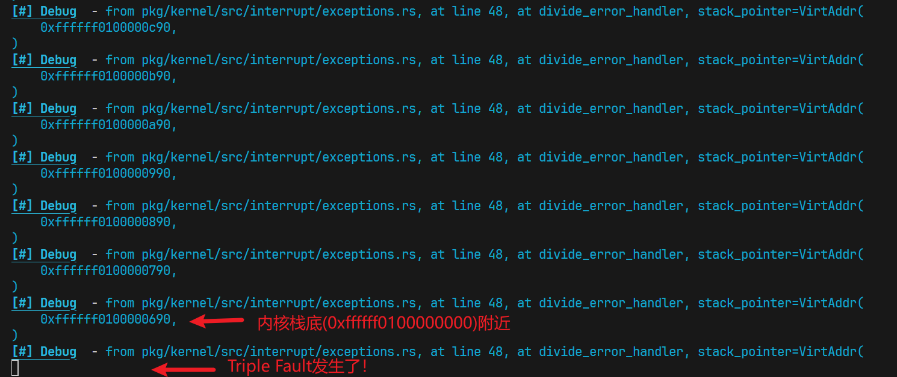
加分项
1.😋 为全部可能的 CPU 异常 设置对应的处理程序，使用 panic! 输出异常信息。
见关键代码部分, [点击跳转](# 实现注册中断处理程序)
2.😋 你如何定义用于计数的 COUNTER，它能够做到线程安全吗？如果不能，如何修改？
见关键代码部分, [点击跳转](# 实现时钟中断)
我使用AtomicU64实现计数的COUNTER, 在多线程下是安全的
3.🤔 操作 APIC 时存在大量比特操作，尝试结合使用 bitflags 和 bit_field 来定义和操作这些寄存器的值，从而获得更好的可读性。
见关键代码部分, [点击跳转](# 使用bitflags实现初始化APIC)
4.🤔 你的串口输入驱动是否能正确的处理中文甚至 emoji 输入？如何能够正确处理？
可以支持中文和emoji的输入,效果如下图
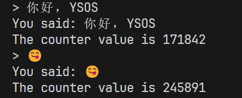
处理方式如下
中文和emoji是采用UTF-8编码的, 这里需要以Unicode字符为单位保存. 串口输入接收到的单个字符长度在1到4字节不等, 需要在串口接收阶段就完成将字节流转为Unicode字符的操作. 在pkg/kernel/src/interrupt/serial.rs的receive()函数中, 使用一个长度为4的Unicode输入缓冲区, 它会在一个循环中逐字节读取, 直到当前Unicode输入缓冲区的数据刚好能够组成一个Unicode字符, 就清空Unicode输入缓冲区, 将该字符放入全局缓冲区.
3. 关键代码
实现tss.interrupt_stack_table
pkg/kernel/src/memory/gdt.rs
1 2 3 4 5 6 7 8 9 10 11 12 13 14 15 16 17 18 19 20 21 22 23 24 25 26 as usize ] = {const STACK_SIZE: usize = IST_SIZES[1 ];static mut STACK: [u8 ; STACK_SIZE] = [0 ; STACK_SIZE];let stack_start = VirtAddr::from_ptr (unsafe { STACK.as_ptr () });let stack_end = stack_start + STACK_SIZE as u64 ;"Double Fault Stack: 0x{:016x}-0x{:016x}" ,as_u64 (),as_u64 ()as usize ] = {const STACK_SIZE: usize = IST_SIZES[2 ];static mut STACK: [u8 ; STACK_SIZE] = [0 ; STACK_SIZE];let stack_start = VirtAddr::from_ptr (unsafe { STACK.as_ptr () });let stack_end = stack_start + STACK_SIZE as u64 ;"Page Fault Stack : 0x{:016x}-0x{:016x}" ,as_u64 (),as_u64 ()
实现注册中断处理程序
在pkg/kernel/src/interrupt/mod.rs修改init函数
1 2 3 4 5 6 7 8 9 10 11 12 13 14 15 16 pub fn init () {load ();match apic::XApic::support () {true => info!("XAPIC supported" ),false => error!("XAPIC not supported" ),let mut xapic = unsafe { XApic::new (physical_to_virtual (LAPIC_ADDR)) };cpu_init ();enable_irq (consts::Irq::Serial0 as u8 , 0 );"Interrupts Initialized." );
在pkg/kernel/src/interrupt/exceptions.rs的register_idt函数添加以下内容
1 2 3 4 5 6 7 8 9 10 11 12 13 14 15 16 17 18 19 20 21 22 23 24 25 26 27 28 set_handler_fn (debug_handler);set_handler_fn (nmi_handler);set_handler_fn (breakpoint_handler);set_handler_fn (overflow_handler);set_handler_fn (bound_range_exceeded_handler);set_handler_fn (invalid_opcode_handler);set_handler_fn (device_not_available_handler);set_handler_fn (invalid_tss_handler);set_handler_fn (segment_not_present_handler);set_handler_fn (stack_segment_fault_handler);set_handler_fn (general_protection_fault_handler);set_handler_fn (x87_floating_point_handler);set_handler_fn (alignment_check_handler);set_handler_fn (machine_check_handler);set_handler_fn (simd_floating_point_handler);set_handler_fn (virtualization_handler);set_handler_fn (hv_injection_handler);set_handler_fn (vmm_communication_handler);set_handler_fn (security_exception_handler);
在page_fault_handler中, 将Cr2::read().unwrap_or(0xdeadbeef),改为Cr2::read().unwrap_or(VirtAddr::new(0xdeadbeef)),
然后添加中断处理函数
1 2 3 4 5 6 7 8 9 10 11 12 13 14 15 16 17 18 19 20 21 22 23 24 25 26 27 28 29 30 31 32 33 34 35 36 37 38 39 40 41 42 43 44 45 46 47 48 49 50 51 52 53 54 55 56 57 58 59 60 61 62 63 64 65 66 67 68 69 70 71 72 73 74 75 pub extern "x86-interrupt" fn debug_handler (stack_frame: InterruptStackFrame) {panic! ("EXCEPTION: DEBUG\n\n{:#?}" , stack_frame);pub extern "x86-interrupt" fn nmi_handler (stack_frame: InterruptStackFrame) {panic! ("EXCEPTION: NMI\n\n{:#?}" , stack_frame);pub extern "x86-interrupt" fn breakpoint_handler (stack_frame: InterruptStackFrame) {panic! ("EXCEPTION: BREAKPOINT\n\n{:#?}" , stack_frame);pub extern "x86-interrupt" fn overflow_handler (stack_frame: InterruptStackFrame) {panic! ("EXCEPTION: OVERFLOW\n\n{:#?}" , stack_frame);pub extern "x86-interrupt" fn bound_range_exceeded_handler (stack_frame: InterruptStackFrame) {panic! ("EXCEPTION: BOUND RANGE EXCEEDED\n\n{:#?}" , stack_frame);pub extern "x86-interrupt" fn invalid_opcode_handler (stack_frame: InterruptStackFrame) {panic! ("EXCEPTION: INVALID OPCODE\n\n{:#?}" , stack_frame);pub extern "x86-interrupt" fn device_not_available_handler (stack_frame: InterruptStackFrame) {panic! ("EXCEPTION: DEVICE NOT AVAILABLE\n\n{:#?}" , stack_frame);pub extern "x86-interrupt" fn invalid_tss_handler (stack_frame: InterruptStackFrame, err_code: u64 ) {panic! ("EXCEPTION: INVALID TSS, ERROR_CODE: 0x{:016x}\n\n{:#?}" ,pub extern "x86-interrupt" fn segment_not_present_handler (u64 panic! ("EXCEPTION: SEGMENT NOT PRESENT, ERROR_CODE: 0x{:016x}\n\n{:#?}" , err_code, stack_frame);pub extern "x86-interrupt" fn stack_segment_fault_handler (u64 panic! ("EXCEPTION: STACK SEGMENT FAULT, ERROR_CODE: 0x{:016x}\n\n{:#?}" , err_code, stack_frame);pub extern "x86-interrupt" fn general_protection_fault_handler (u64 ,panic! ("EXCEPTION: GENERAL PROTECTION FAULT, ERROR_CODE: 0x{:016x}\n\n{:#?}" ,pub extern "x86-interrupt" fn x87_floating_point_handler (stack_frame: InterruptStackFrame) {panic! ("EXCEPTION: X87 FLOATING POINT\n\n{:#?}" , stack_frame);pub extern "x86-interrupt" fn alignment_check_handler (stack_frame: InterruptStackFrame, err_code: u64 ) {panic! ("EXCEPTION: ALIGNMENT CHECK, ERROR_CODE: 0x{:016x}\n\n{:#?}" , pub extern "x86-interrupt" fn machine_check_handler (stack_frame: InterruptStackFrame) -> ! {panic! ("EXCEPTION: MACHINE CHECK\n\n{:#?}" , stack_frame);pub extern "x86-interrupt" fn simd_floating_point_handler (stack_frame: InterruptStackFrame) {panic! ("EXCEPTION: SIMD FLOATING POINT\n\n{:#?}" , stack_frame);pub extern "x86-interrupt" fn virtualization_handler (stack_frame: InterruptStackFrame) {panic! ("EXCEPTION: VIRTUALIZATION\n\n{:#?}" , stack_frame);pub extern "x86-interrupt" fn hv_injection_handler (stack_frame: InterruptStackFrame) {panic! ("EXCEPTION: HV INJECTION\n\n{:#?}" , stack_frame);pub extern "x86-interrupt" fn vmm_communication_handler (stack_frame: InterruptStackFrame, err_code: u64 ) {panic! ("EXCEPTION: VMM COMMUNICATION, ERROR_CODE: 0x{:016x}\n\n{:#?}" , pub extern "x86-interrupt" fn security_exception_handler (stack_frame: InterruptStackFrame, err_code: u64 ) {panic! ("EXCEPTION: SECURITY EXCEPTION, ERROR_CODE: 0x{:016x}\n\n{:#?}" ,
实现初始化APIC
pkg/kernel/src/interrupt/apic/xapic.rs
1 2 3 4 5 6 7 8 9 10 11 12 13 14 15 16 17 18 19 20 21 22 23 24 25 26 27 28 29 30 31 32 33 34 35 36 37 38 39 40 41 42 43 44 45 46 47 48 49 50 51 52 53 54 55 56 57 58 59 60 61 62 63 64 65 66 67 68 69 70 71 72 73 fn support () -> bool {new ()get_feature_info ()map (|f| f.has_apic ())unwrap_or (false )fn cpu_init (&mut self ) {unsafe {let mut spiv = self .read (0xF0 );1 << 8 ; 0xFF );as u32 + Irq::Spurious as u32 ;self .write (0xF0 , spiv);self .write (0x3E0 , 0b1011 ); self .write (0x380 , 0x20000 ); let mut lvt_timer = self .read (0x320 ); 0xFF );as u32 + Irq::Timer as u32 ;1 << 16 ); 1 << 17 ; self .write (0x320 , lvt_timer);self .write (0x350 , 1 << 16 ); self .write (0x360 , 1 << 16 ); self .write (0x340 , 1 << 16 );let mut lvt_error = self .read (0x370 );0xFF );as u32 + Irq::Error as u32 ;self .write (0x370 , lvt_error);self .write (0x280 , 0 );self .write (0x280 , 0 );self .eoi ();self .write (0x310 , 0 ); const BCAST: u32 = 1 << 19 ;const INIT: u32 = 5 << 8 ;const TMLV: u32 = 1 << 15 ; self .write (0x300 , BCAST | INIT | TMLV); const DS: u32 = 1 << 12 ;while self .read (0x300 ) & DS != 0 {} self .write (0x080 , 0 );
实现时钟中断
修改pkg/kernel/src/interrupt/clock.rs
1 2 3 4 5 6 7 8 9 10 11 12 13 14 15 static COUNTER: AtomicU64 = AtomicU64::new (0 );#[inline] pub fn read_counter () -> u64 {load (core::sync::atomic::Ordering::SeqCst)#[inline] pub fn inc_counter () -> u64 {let id = COUNTER.fetch_add (1 , core::sync::atomic::Ordering::SeqCst);
实现串口输入中断
在pkg/kernel/src/drivers/uart16550.rs的init函数结尾加入以下内容
1 2 self .interrupt_enable.write (0x01 );
实现pkg/kernel/src/drivers/input.rs, 代码如下
1 2 3 4 5 6 7 8 9 10 11 12 13 14 15 16 17 18 19 20 21 22 23 24 25 26 27 28 29 30 31 32 33 34 35 36 37 38 39 40 41 42 43 44 45 46 47 48 49 50 51 52 53 54 55 56 57 58 use alloc::string::String ;use crossbeam_queue::ArrayQueue;use pc_keyboard::DecodedKey;type Key = DecodedKey;const BUFFER_SIZE: usize = 128 ;static ref INPUT_BUF: ArrayQueue<Key> = ArrayQueue::new (BUFFER_SIZE);#[inline] pub fn push_key (key: Key) {if INPUT_BUF.push (key).is_err () {"Input buffer is full. Dropping key '{:?}'" , key);#[inline] pub fn try_pop_key () -> Option <Key> {pop ()pub fn pop_key () -> Key {loop {if let Some (key) = try_pop_key () {return key;pub fn get_line () -> String {let mut line = String ::with_capacity (BUFFER_SIZE);loop {let cur_key = pop_key ();match cur_key {Unicode (c) => {match c {'\n' |'\r' => {print! ("\n" );break ;'\x08' | '\x7f' => {if !line.is_empty () {print! ("\x08\x20\x08" );pop ();print! ("{}" , c);push (c);
实现pkg/kernel/src/interrupt/serial.rs
1 2 3 4 5 6 7 8 9 10 11 12 13 14 15 16 17 18 19 20 21 22 23 24 25 26 27 28 29 30 31 32 33 34 35 36 37 38 39 40 41 42 43 44 45 46 47 48 49 50 51 52 53 54 55 use core::str ::from_utf8;use alloc::vec::Vec ;use pc_keyboard::DecodedKey;use x86_64::structures::idt::{InterruptDescriptorTable, InterruptStackFrame};use crate::{drivers::input::push_key, serial::get_serial_for_sure};use super::consts::*;pub unsafe fn register_idt (idt: &mut InterruptDescriptorTable) {as u8 + Irq::Serial0 as u8 ]set_handler_fn (serial_handler);pub extern "x86-interrupt" fn serial_handler (_st: InterruptStackFrame) {receive ();ack ();const INPUT_BUFFER_SIZE: usize = 4 ;fn receive () {let mut input_buffer :Vec <u8 > = Vec ::with_capacity (INPUT_BUFFER_SIZE);loop {let mut serial = get_serial_for_sure ();let rec = serial.receive ();drop (serial);match rec{Some (c) => {push (c);if let Ok (s) = from_utf8 (&input_buffer){let ch = s.chars ().next ().unwrap ();push_key (DecodedKey::Unicode (ch));clear ();else if input_buffer.len () >= INPUT_BUFFER_SIZE{clear ();break ;
实现用户交互
修改pkg/kernel/src/main.rs如下
1 2 3 4 5 6 7 8 9 10 11 12 13 14 15 16 17 18 19 20 21 22 23 24 25 26 27 28 29 #![no_std] #![no_main] use ysos::*;use ysos_kernel as ysos;use crate::drivers::input;use crate::interrupt::clock::read_counter;extern crate alloc;pub fn kernel_main (boot_info: &'static boot::BootInfo) -> ! {init (boot_info);loop {print! ("> " );let input = input::get_line ();match input.trim () {"exit" => break ,println! ("You said: {}" , input);println! ("The counter value is {}" , read_counter ());shutdown (boot_info);
使用bitflags实现初始化APIC
参照 https://ysos.gzti.me/wiki/apic/#local-apic-寄存器 中的表格
修改pkg/kernel/src/interrupt/apic/xapic.rs
添加bitflags
1 2 3 4 5 6 7 8 9 10 11 12 13 14 15 16 17 bitflags! {pub struct APIC : u32 {const TPR = 0x80 ;const spiv = 0xf0 ;const ErrorStatusRegister = 0x280 ;const ICR0 = 0x300 ;const ICR1 = 0x310 ;const LVTTimerRegister = 0x320 ;const LVTPerformance = 0x340 ;const LVTLINT0Register = 0x350 ;const LVTLINT1Register = 0x360 ;const LVTErrorRegister = 0x370 ;const InitialCountRegister = 0x380 ;const DivideConfigurationRegister = 0x3e0 ;
cpu_init函数修改如下
1 2 3 4 5 6 7 8 9 10 11 12 13 14 15 16 17 18 19 20 21 22 23 24 25 26 27 28 29 30 31 32 33 34 35 36 37 38 39 40 41 42 43 44 45 46 47 48 49 50 51 52 53 54 55 56 fn cpu_init (&mut self ) {unsafe {let mut spiv = self .read (APIC::spiv.bits ());1 << 8 ; 0xFF );as u32 + Irq::Spurious as u32 ;self .write (APIC::spiv.bits (), spiv);self .write (APIC::DivideConfigurationRegister.bits (), 0b1011 ); self .write (APIC::InitialCountRegister.bits (), 0x20000 ); let mut lvt_timer = self .read (APIC::LVTTimerRegister.bits ()); 0xFF );as u32 + Irq::Timer as u32 ;1 << 16 ); 1 << 17 ; self .write (APIC::LVTTimerRegister.bits (), lvt_timer);self .write (APIC::LVTLINT0Register.bits (), 1 << 16 ); self .write (APIC::LVTLINT1Register.bits (), 1 << 16 ); self .write (APIC::LVTPerformance.bits (), 1 << 16 );let mut lvt_error = self .read (APIC::LVTErrorRegister.bits ());0xFF );as u32 + Irq::Error as u32 ;self .write (APIC::LVTErrorRegister.bits (), lvt_error);self .write (APIC::LVTErrorRegister.bits (), 0 );self .write (APIC::LVTErrorRegister.bits (), 0 );self .eoi ();self .write (APIC::ICR1.bits (), 0 ); const BCAST: u32 = 1 << 19 ;const INIT: u32 = 5 << 8 ;const TMLV: u32 = 1 << 15 ; self .write (APIC::ICR0.bits (), BCAST | INIT | TMLV); const DS: u32 = 1 << 12 ;while self .read (APIC::ICR0.bits ()) & DS != 0 {} self .write (APIC::TPR.bits (), 0 );
4. 实验结果
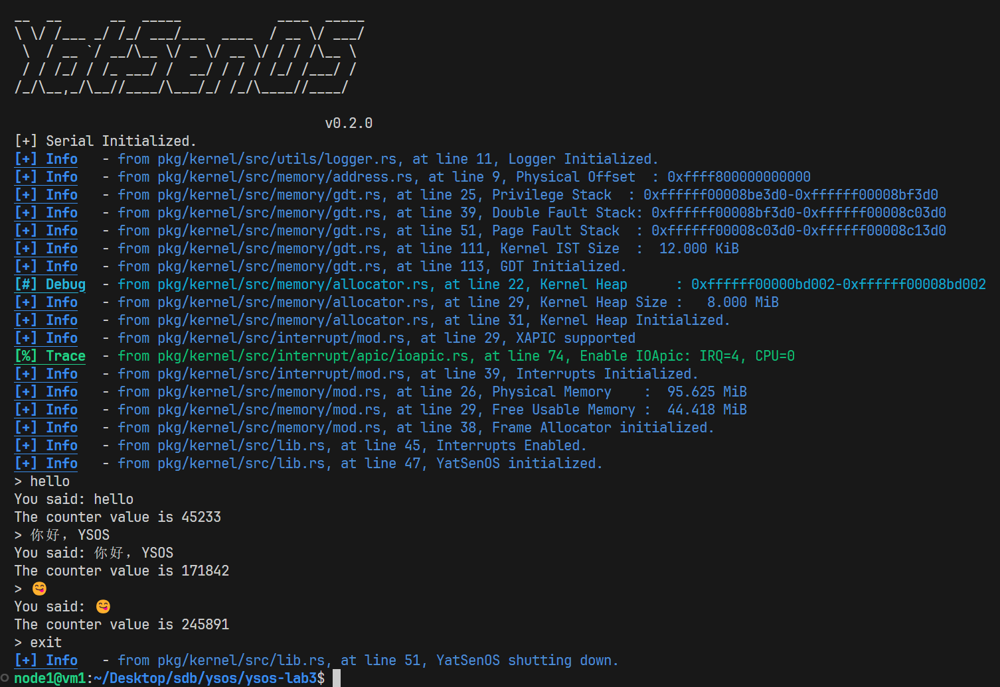
如上图, 可以正常实现用户交互的功能, 支持中文输入和emoji, 并且打印出当前的时钟counter值, 输入exit能够正常关机
5. 总结
熟悉了中断处理的操作, 并且了解了计算机如何实现时钟中断和输入中断, 如何与用户通过命令行交互